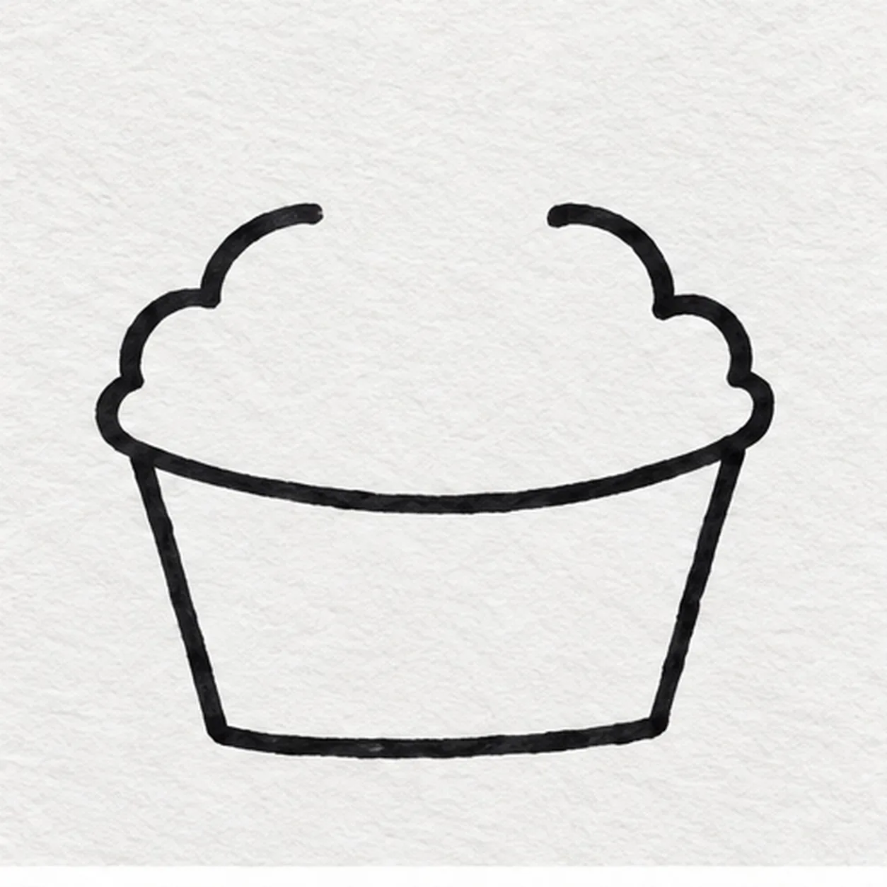
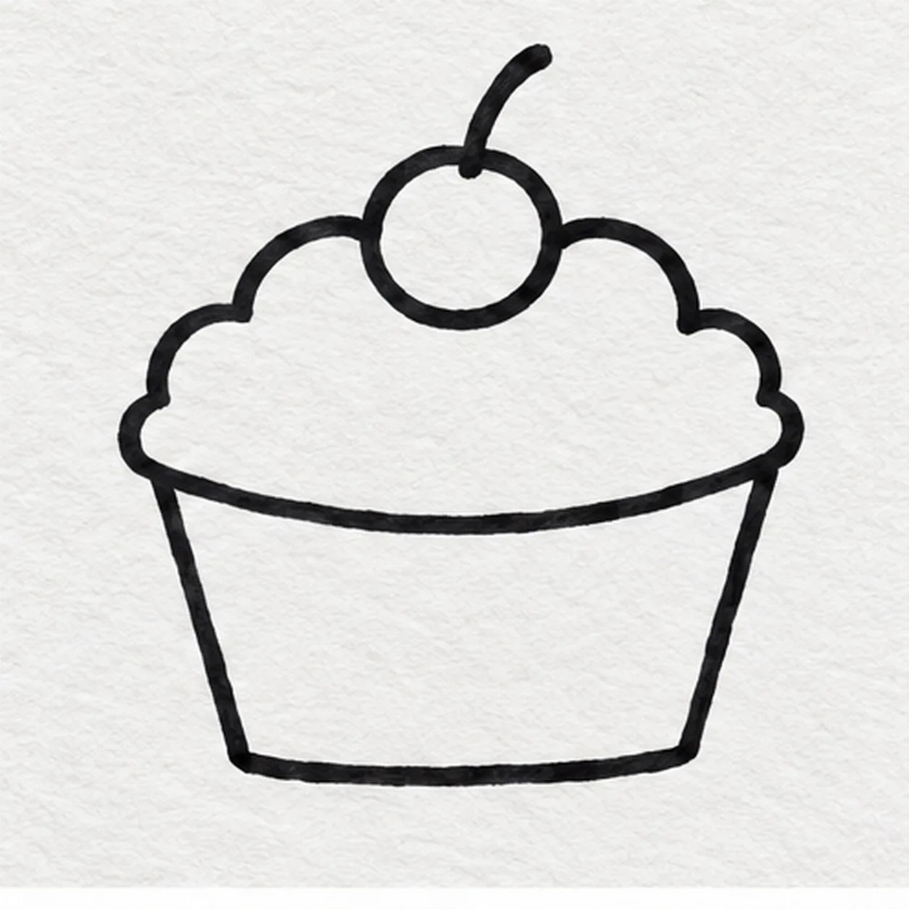
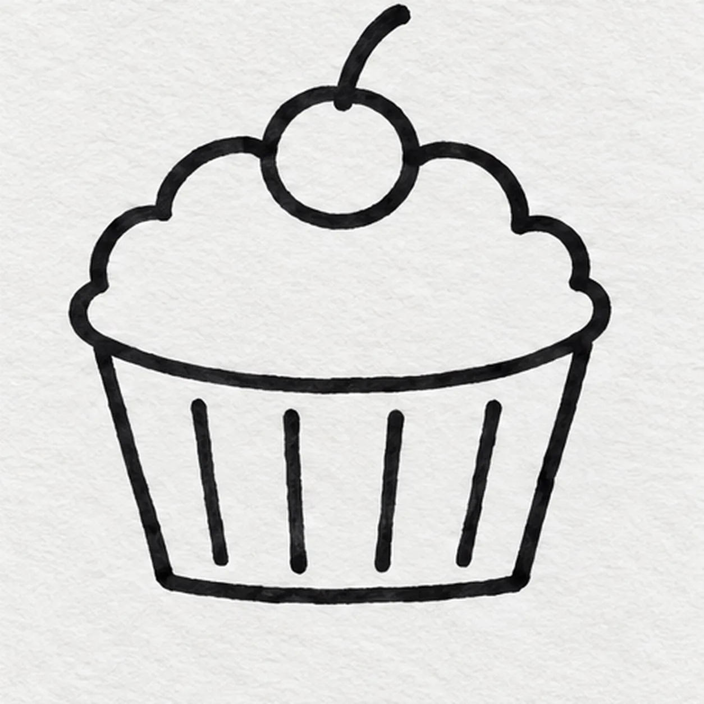
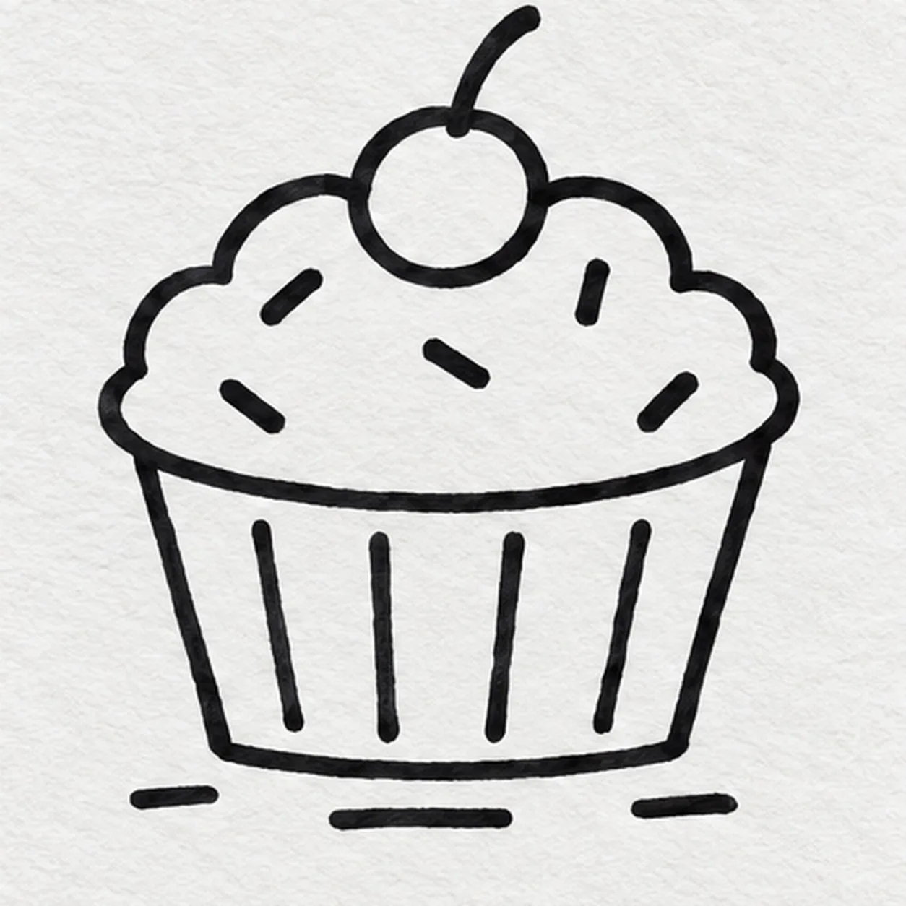

Marker ready?
Let's draw a cartoon cupcake
Treat this as one playful practice round: sketch the idea loosely, simplify the shapes, then commit with confident marker outlines and bright fills.
-
01

Shape the wrapper and frosting
Draw a low tapered wrapper with a shallow curved rim. From both rim ends, curl uneven frosting scallops upward, stopping short of the top center to leave a round gap for the cherry.
Marker tip: Leave a round opening between the two frosting sides for the cherry.
-
02

Top it with a cherry
Fill the reserved top-center gap with a round cherry, joining its lower sides to the two frosting curves. Add one short bent stem above it; keep every earlier line.
Marker tip: Let the cherry bridge the open frosting gap without drawing through it.
-
03

Fold the wrapper
Inside the wrapper, pull four short pleat lines from the curved rim toward the flat bottom. Space them unevenly and keep them inside the outline.
Marker tip: Count four separate pleats across the wrapper.
-
04

Sprinkle and ground
Scatter five short separate sprinkle strokes over the frosting, avoiding the cherry. Beneath the wrapper, draw a short broken ground shadow.
Marker tip: Count five sprinkles before drawing the three ground marks.
-
05

Color the cupcake
Fill the established frosting with streaky raspberry pink, the cherry red, and the wrapper teal. Keep five black sprinkles and four black pleats visible inside the color.
Marker tip: Color inside the contours with broad strokes that leave a little white paper.